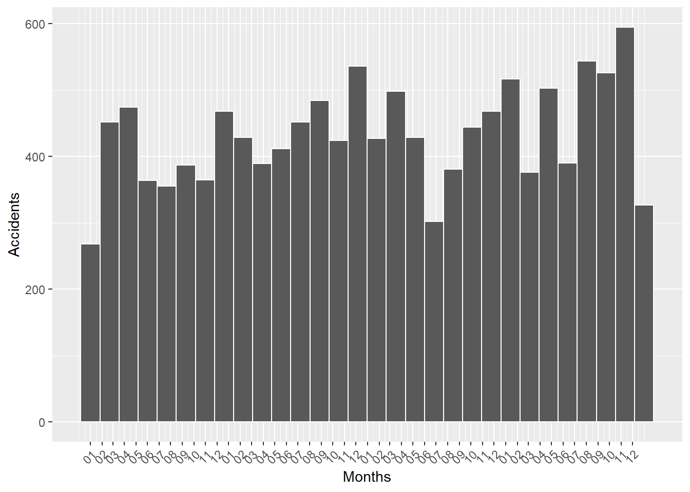
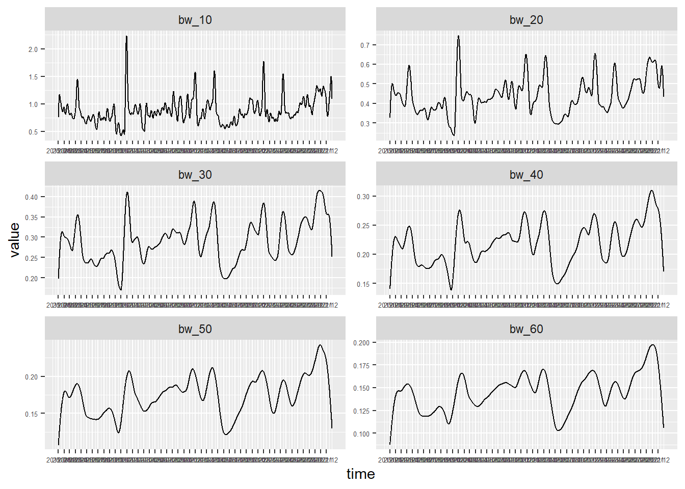
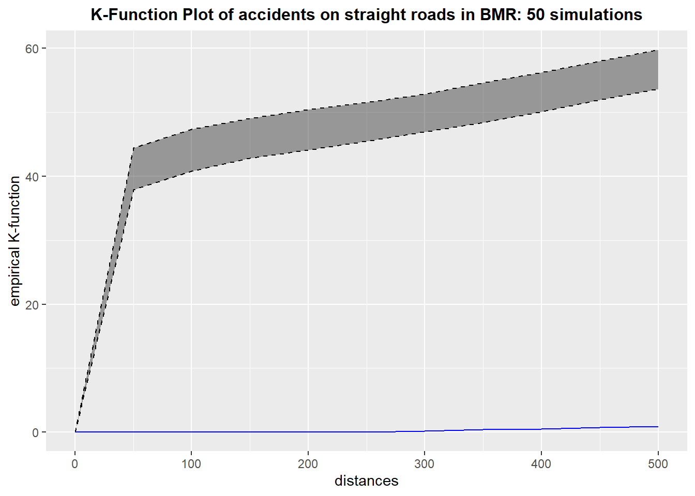

pacman::p_load(tidyverse, spatstat, sf, spNetwork, tmap, classInt, viridis)Take Home Exercise 01
Background
Road traffic accidents cause 1.19 million deaths and 20 to 50 million injuries annually, with most fatalities occurring in low- and middle-income countries (World Health Organisation (WHO)). Road traffic injuries are the leading cause of death for individuals aged 5–29 and place a heavy economic burden on nations, costing up to 3% of GDP. Thailand has some of the deadliest roads globally, with about 20,000 fatalities annually. From 2014 to 2021, accidents rose, especially on national highways, with black spots frequently found on straight roads and intersections.
Objectives
Focusing in the Bangkok Metropolitan Region (BMR), Spatial Point Patterns Analysis (SPPA) will be used to explore and identify factors influencing road traffic accidents. Such facts are mainly behavioral and environmental, with this exercise aiming to incorporate temporal factors as well. Specific objectives are as follows:
- To visualize the spatio-temporal dynamics of road traffic accidents in BMR using appropriate statistical graphics and geovisualization methods.
- To conduct detailed spatial analysis of road traffic accidents using appropriate Network Spatial Point Patterns Analysis methods.
- To conduct detailed spatio-temporal analysis of road traffic accidents using appropriate Temporal Network Spatial Point Patterns Analysis methods.
Study Area
The study area will be Bangkok Metropolitan Region, which is defined here.
Data Sources
(saved under ‘data’ folder)
Thailand Road Accident 2019-2022 from Kaggle
Thailand Roads (OpenStreetMap Export) from HDX
Thailand - Subnational Administrative Boundaries from HDX…Click here to download here
1. Setting Up
1.1 Loading R Packages
I will be using the following R packages:
-sf package to perform geospatial wrangling tasks
- spatstat package to calculate nearest neighbour
- spNetwork package to perform network kernel density estimation (NKDE) and temporal network kernel density estimation
- tidyverse package for reading csv files, dataframe processing tasks
- tmap package for plotting tasks
- classInt and viridis to generate gif animation for temporal network kernel density estimation.
1.2 Loading Datasets
1.2.1 Thailand Road Accidents Data
# Load 2019-2020 Road Accidents Data
ra_tbl <- read_csv('data/thai_road_accident_2019_2022.csv')Rows: 81735 Columns: 18
── Column specification ────────────────────────────────────────────────────────
Delimiter: ","
chr (10): province_th, province_en, agency, route, vehicle_type, presumed_c...
dbl (6): acc_code, number_of_vehicles_involved, number_of_fatalities, numb...
dttm (2): incident_datetime, report_datetime
ℹ Use `spec()` to retrieve the full column specification for this data.
ℹ Specify the column types or set `show_col_types = FALSE` to quiet this message.# Check data
glimpse(ra_tbl)Rows: 81,735
Columns: 18
$ acc_code <dbl> 571905, 3790870, 599075, 571924, 599523, 5…
$ incident_datetime <dttm> 2019-01-01 00:00:00, 2019-01-01 00:03:00,…
$ report_datetime <dttm> 2019-01-02 06:11:00, 2020-02-20 13:48:00,…
$ province_th <chr> "ลพบุรี", "อุบลราชธานี", "ประจวบคีรีขันธ์", "เชียงใ…
$ province_en <chr> "Loburi", "Ubon Ratchathani", "Prachuap Kh…
$ agency <chr> "department of rural roads", "department o…
$ route <chr> "แยกทางหลวงหมายเลข 21 (กม.ที่ 31+000) - บ้านวั…
$ vehicle_type <chr> "motorcycle", "private/passenger car", "mo…
$ presumed_cause <chr> "driving under the influence of alcohol", …
$ accident_type <chr> "other", "rollover/fallen on straight road…
$ number_of_vehicles_involved <dbl> 1, 1, 2, 1, 1, 1, 2, 2, 2, 2, 1, 1, 1, 1, …
$ number_of_fatalities <dbl> 0, 0, 1, 0, 0, 0, 0, 1, 3, 0, 0, 1, 0, 0, …
$ number_of_injuries <dbl> 2, 2, 0, 1, 0, 2, 2, 0, 0, 1, 1, 0, 1, 1, …
$ weather_condition <chr> "clear", "clear", "clear", "clear", "clear…
$ latitude <dbl> 14.959105, 15.210738, 12.374259, 18.601721…
$ longitude <dbl> 100.87346, 104.86269, 99.90795, 98.80420, …
$ road_description <chr> "straight road", "straight road", "wide cu…
$ slope_description <chr> "no slope", "no slope", "slope area", "no …1.2.2 Thailand Openstreet Map Data
# Load Thailand Roads from Openstreet Map
th_road <- st_read(dsn = "data/hotosm_tha_roads_lines_shp/", layer = "hotosm_tha_roads_lines_shp") Reading layer `hotosm_tha_roads_lines_shp' from data source
`C:\Users\Henry\Desktop\SMU Masters\2024-2025 T1\Geospatial Analytics & Applications\Project\GeospatialWebsite\Take-Home_Ex\Take-Home_Ex_01\data\hotosm_tha_roads_lines_shp'
using driver `ESRI Shapefile'
Simple feature collection with 2792590 features and 14 fields
Geometry type: MULTILINESTRING
Dimension: XY
Bounding box: xmin: 97.34457 ymin: 5.643645 xmax: 105.6528 ymax: 20.47168
CRS: NA# Check data
# glimpse(th_road)
head(th_road, n=5)Simple feature collection with 5 features and 14 fields
Geometry type: MULTILINESTRING
Dimension: XY
Bounding box: xmin: 100.7831 ymin: 13.73046 xmax: 100.7913 ymax: 13.74091
CRS: NA
name name_en highway surface smoothness width
1 ถนนฉลองกรุง Chalong Krung Road secondary paved <NA> <NA>
2 ซอยฉลองกรุง 1/1 Soi Chalong Krung 1/1 residential <NA> <NA> <NA>
3 <NA> <NA> secondary_link <NA> <NA> <NA>
4 <NA> <NA> service <NA> <NA> <NA>
5 ถนนฉลองกรุง Chalong Krung Road secondary concrete <NA> <NA>
lanes oneway bridge layer source name_th osm_id osm_type
1 <NA> yes <NA> <NA> <NA> ถนนฉลองกรุง 1125681229 ways_line
2 <NA> <NA> <NA> <NA> <NA> ซอยฉลองกรุง 1/1 594401607 ways_line
3 <NA> yes <NA> <NA> <NA> <NA> 472283206 ways_line
4 <NA> <NA> <NA> <NA> <NA> <NA> 594401608 ways_line
5 2 yes yes 1 Bing ถนนฉลองกรุง 116847248 ways_line
geometry
1 MULTILINESTRING ((100.7913 ...
2 MULTILINESTRING ((100.7882 ...
3 MULTILINESTRING ((100.7844 ...
4 MULTILINESTRING ((100.7873 ...
5 MULTILINESTRING ((100.7831 ...1.2.3 Thailand Subnational Administrative Boundaries
Based on the description from HDX, there are a few administrative boundaries:
- Level 0: Country
- Level 1: Province
- Level 2: District
- Level 3: Sub-District, Tambon
While the dataset contains other shp files, the focus will be on those levels.
# Load Thailand Country from HDX
th_bound_l0 <- st_read(dsn = "data/tha_adm_rtsd_itos_20210121_shp/", layer = "tha_admbnda_adm0_rtsd_20220121")Reading layer `tha_admbnda_adm0_rtsd_20220121' from data source
`C:\Users\Henry\Desktop\SMU Masters\2024-2025 T1\Geospatial Analytics & Applications\Project\GeospatialWebsite\Take-Home_Ex\Take-Home_Ex_01\data\tha_adm_rtsd_itos_20210121_shp'
using driver `ESRI Shapefile'
Simple feature collection with 1 feature and 13 fields
Geometry type: MULTIPOLYGON
Dimension: XY
Bounding box: xmin: 97.34336 ymin: 5.613038 xmax: 105.637 ymax: 20.46507
Geodetic CRS: WGS 84glimpse(th_bound_l0)Rows: 1
Columns: 14
$ Shape_Leng <dbl> 106.6359
$ Shape_Area <dbl> 43.40351
$ ADM0_EN <chr> "Thailand"
$ ADM0_TH <chr> "ประเทศไทย"
$ ADM0_PCODE <chr> "TH"
$ ADM0_REF <chr> NA
$ ADM0ALT1EN <chr> NA
$ ADM0ALT2EN <chr> NA
$ ADM0ALT1TH <chr> NA
$ ADM0ALT2TH <chr> NA
$ date <date> 2019-02-18
$ validOn <date> 2022-01-22
$ validTo <date> -001-11-30
$ geometry <MULTIPOLYGON [°]> MULTIPOLYGON (((100.0903 6....# Visualize the boundaries
plot(st_geometry(th_bound_l0))
# Load Thailand Province from HDX
th_bound_l1 <- st_read(dsn = "data/tha_adm_rtsd_itos_20210121_shp/", layer = "tha_admbnda_adm1_rtsd_20220121")Reading layer `tha_admbnda_adm1_rtsd_20220121' from data source
`C:\Users\Henry\Desktop\SMU Masters\2024-2025 T1\Geospatial Analytics & Applications\Project\GeospatialWebsite\Take-Home_Ex\Take-Home_Ex_01\data\tha_adm_rtsd_itos_20210121_shp'
using driver `ESRI Shapefile'
Simple feature collection with 77 features and 16 fields
Geometry type: MULTIPOLYGON
Dimension: XY
Bounding box: xmin: 97.34336 ymin: 5.613038 xmax: 105.637 ymax: 20.46507
Geodetic CRS: WGS 84glimpse(th_bound_l1)Rows: 77
Columns: 17
$ Shape_Leng <dbl> 2.417227, 1.695100, 1.251111, 1.884945, 3.041716, 1.739908,…
$ Shape_Area <dbl> 0.13133873, 0.07926199, 0.05323766, 0.12698345, 0.21393797,…
$ ADM1_EN <chr> "Bangkok", "Samut Prakan", "Nonthaburi", "Pathum Thani", "P…
$ ADM1_TH <chr> "กรุงเทพมหานคร", "สมุทรปราการ", "นนทบุรี", "ปทุมธานี", "พระนครศรีอ…
$ ADM1_PCODE <chr> "TH10", "TH11", "TH12", "TH13", "TH14", "TH15", "TH16", "TH…
$ ADM1_REF <chr> NA, NA, NA, NA, NA, NA, NA, NA, NA, NA, NA, NA, NA, NA, NA,…
$ ADM1ALT1EN <chr> NA, NA, NA, NA, NA, NA, NA, NA, NA, NA, NA, NA, NA, NA, NA,…
$ ADM1ALT2EN <chr> NA, NA, NA, NA, NA, NA, NA, NA, NA, NA, NA, NA, NA, NA, NA,…
$ ADM1ALT1TH <chr> NA, NA, NA, NA, NA, NA, NA, NA, NA, NA, NA, NA, NA, NA, NA,…
$ ADM1ALT2TH <chr> NA, NA, NA, NA, NA, NA, NA, NA, NA, NA, NA, NA, NA, NA, NA,…
$ ADM0_EN <chr> "Thailand", "Thailand", "Thailand", "Thailand", "Thailand",…
$ ADM0_TH <chr> "ประเทศไทย", "ประเทศไทย", "ประเทศไทย", "ประเทศไทย", "ประเทศ…
$ ADM0_PCODE <chr> "TH", "TH", "TH", "TH", "TH", "TH", "TH", "TH", "TH", "TH",…
$ date <date> 2019-02-18, 2019-02-18, 2019-02-18, 2019-02-18, 2019-02-18…
$ validOn <date> 2022-01-22, 2022-01-22, 2022-01-22, 2022-01-22, 2022-01-22…
$ validTo <date> -001-11-30, -001-11-30, -001-11-30, -001-11-30, -001-11-30…
$ geometry <MULTIPOLYGON [°]> MULTIPOLYGON (((100.6139 13..., MULTIPOLYGON (…# Visualize the boundaries
plot(st_geometry(th_bound_l1))
# Load Thailand Province from HDX
th_bound_l2 <- st_read(dsn = "data/tha_adm_rtsd_itos_20210121_shp/", layer = "tha_admbnda_adm2_rtsd_20220121") Reading layer `tha_admbnda_adm2_rtsd_20220121' from data source
`C:\Users\Henry\Desktop\SMU Masters\2024-2025 T1\Geospatial Analytics & Applications\Project\GeospatialWebsite\Take-Home_Ex\Take-Home_Ex_01\data\tha_adm_rtsd_itos_20210121_shp'
using driver `ESRI Shapefile'
Simple feature collection with 928 features and 19 fields
Geometry type: MULTIPOLYGON
Dimension: XY
Bounding box: xmin: 97.34336 ymin: 5.613038 xmax: 105.637 ymax: 20.46507
Geodetic CRS: WGS 84glimpse(th_bound_l2)Rows: 928
Columns: 20
$ Shape_Leng <dbl> 0.08541733, 0.13413177, 0.67634217, 0.08588647, 0.30172202,…
$ Shape_Area <dbl> 0.0004504685, 0.0009501914, 0.0198588627, 0.0003369561, 0.0…
$ ADM2_EN <chr> "Phra Nakhon", "Dusit", "Nong Chok", "Bang Rak", "Bang Khen…
$ ADM2_TH <chr> "พระนคร", "ดุสิต", "หนองจอก", "บางรัก", "บางเขน", "บางกะปิ", "ป…
$ ADM2_PCODE <chr> "TH1001", "TH1002", "TH1003", "TH1004", "TH1005", "TH1006",…
$ ADM2_REF <chr> NA, NA, NA, NA, NA, NA, NA, NA, NA, NA, NA, NA, NA, NA, NA,…
$ ADM2ALT1EN <chr> NA, NA, NA, NA, NA, NA, NA, NA, NA, NA, NA, NA, NA, NA, NA,…
$ ADM2ALT2EN <chr> NA, NA, NA, NA, NA, NA, NA, NA, NA, NA, NA, NA, NA, NA, NA,…
$ ADM2ALT1TH <chr> NA, NA, NA, NA, NA, NA, NA, NA, NA, NA, NA, NA, NA, NA, NA,…
$ ADM2ALT2TH <chr> NA, NA, NA, NA, NA, NA, NA, NA, NA, NA, NA, NA, NA, NA, NA,…
$ ADM1_EN <chr> "Bangkok", "Bangkok", "Bangkok", "Bangkok", "Bangkok", "Ban…
$ ADM1_TH <chr> "กรุงเทพมหานคร", "กรุงเทพมหานคร", "กรุงเทพมหานคร", "กรุงเทพมหาน…
$ ADM1_PCODE <chr> "TH10", "TH10", "TH10", "TH10", "TH10", "TH10", "TH10", "TH…
$ ADM0_EN <chr> "Thailand", "Thailand", "Thailand", "Thailand", "Thailand",…
$ ADM0_TH <chr> "ประเทศไทย", "ประเทศไทย", "ประเทศไทย", "ประเทศไทย", "ประเทศ…
$ ADM0_PCODE <chr> "TH", "TH", "TH", "TH", "TH", "TH", "TH", "TH", "TH", "TH",…
$ date <date> 2019-02-18, 2019-02-18, 2019-02-18, 2019-02-18, 2019-02-18…
$ validOn <date> 2022-01-22, 2022-01-22, 2022-01-22, 2022-01-22, 2022-01-22…
$ validTo <date> -001-11-30, -001-11-30, -001-11-30, -001-11-30, -001-11-30…
$ geometry <MULTIPOLYGON [°]> MULTIPOLYGON (((100.5007 13..., MULTIPOLYGON (…# Visualize the boundaries
plot(st_geometry(th_bound_l2))# Load Thailand Province from HDX
th_bound_l3 <- st_read(dsn = "data/tha_adm_rtsd_itos_20210121_shp/", layer = "tha_admbnda_adm3_rtsd_20220121") Reading layer `tha_admbnda_adm3_rtsd_20220121' from data source
`C:\Users\Henry\Desktop\SMU Masters\2024-2025 T1\Geospatial Analytics & Applications\Project\GeospatialWebsite\Take-Home_Ex\Take-Home_Ex_01\data\tha_adm_rtsd_itos_20210121_shp'
using driver `ESRI Shapefile'
Simple feature collection with 7425 features and 22 fields
Geometry type: MULTIPOLYGON
Dimension: XY
Bounding box: xmin: 97.34336 ymin: 5.613038 xmax: 105.637 ymax: 20.46507
Geodetic CRS: WGS 84glimpse(th_bound_l3)Rows: 7,425
Columns: 23
$ Shape_Leng <dbl> 0.04769920, 0.03355050, 0.01728931, 0.01904576, 0.01523190,…
$ Shape_Area <dbl> 1.284175e-04, 6.068479e-05, 1.769761e-05, 1.920433e-05, 1.2…
$ ADM3_EN <chr> "Phraborom Maharatchawang", "Wang Burapha Phirom", "Wat Rat…
$ ADM3_TH <chr> "พระบรมมหาราชวัง", "วังบูรพาภิรมย์", "วัดราชบพิธ", "สำราญราษฎร์", "…
$ ADM3_PCODE <chr> "TH100101", "TH100102", "TH100103", "TH100104", "TH100105",…
$ ADM3_REF <chr> NA, NA, NA, NA, NA, NA, NA, NA, NA, NA, NA, NA, NA, NA, NA,…
$ ADM3ALT1EN <chr> NA, NA, NA, NA, NA, NA, NA, NA, NA, NA, NA, NA, NA, NA, NA,…
$ ADM3ALT2EN <chr> NA, NA, NA, NA, NA, NA, NA, NA, NA, NA, NA, NA, NA, NA, NA,…
$ ADM3ALT1TH <chr> NA, NA, NA, NA, NA, NA, NA, NA, NA, NA, NA, NA, NA, NA, NA,…
$ ADM3ALT2TH <chr> NA, NA, NA, NA, NA, NA, NA, NA, NA, NA, NA, NA, NA, NA, NA,…
$ ADM2_EN <chr> "Phra Nakhon", "Phra Nakhon", "Phra Nakhon", "Phra Nakhon",…
$ ADM2_TH <chr> "พระนคร", "พระนคร", "พระนคร", "พระนคร", "พระนคร", "พระนคร",…
$ ADM2_PCODE <chr> "TH1001", "TH1001", "TH1001", "TH1001", "TH1001", "TH1001",…
$ ADM1_EN <chr> "Bangkok", "Bangkok", "Bangkok", "Bangkok", "Bangkok", "Ban…
$ ADM1_TH <chr> "กรุงเทพมหานคร", "กรุงเทพมหานคร", "กรุงเทพมหานคร", "กรุงเทพมหาน…
$ ADM1_PCODE <chr> "TH10", "TH10", "TH10", "TH10", "TH10", "TH10", "TH10", "TH…
$ ADM0_EN <chr> "Thailand", "Thailand", "Thailand", "Thailand", "Thailand",…
$ ADM0_TH <chr> "ประเทศไทย", "ประเทศไทย", "ประเทศไทย", "ประเทศไทย", "ประเทศ…
$ ADM0_PCODE <chr> "TH", "TH", "TH", "TH", "TH", "TH", "TH", "TH", "TH", "TH",…
$ date <date> 2019-02-18, 2019-02-18, 2019-02-18, 2019-02-18, 2019-02-18…
$ validOn <date> 2022-01-22, 2022-01-22, 2022-01-22, 2022-01-22, 2022-01-22…
$ validTo <date> -001-11-30, -001-11-30, -001-11-30, -001-11-30, -001-11-30…
$ geometry <MULTIPOLYGON [°]> MULTIPOLYGON (((100.4945 13..., MULTIPOLYGON (…# Visualize the boundaries
plot(st_geometry(th_bound_l3))
1.2.4 Basic Preprocessing
From a quick look of the various datasets, it is clear that preprocessing is required in order to filter the datasets to:
1. Focus on the study area (Bangkok Metropolitan Region)
2. Work with smaller data to better manage R session memory handling
Other geospatial preprocessing steps will also be taken accordingly. Once done, these datasets will be saved as RDS files for easy retrieval.
1.2.4.1 Processing Thailand Road Accident
The Thailand road accident dataset will be processed to: - remove blanks/na from longitude/latitude (mitigate errors when converting into sf object) - filtered to Bangkok Metropolitan Region - convert tibble dataframe to sf dataframe - project to Thailand coordinate reference system for alignment and visualization
# Transform Thailand Road Accident data
ra_tbl_flt <- ra_tbl %>%
filter(!is.na(longitude) & longitude != "", !is.na(latitude) & latitude != "") %>%
filter(province_en %in% c("Bangkok", "Nonthaburi", "Pathum Thani",
"Samut Prakan", "Samut Sakhon", "Nakhon Pathom")) %>%
st_as_sf(coords = c("longitude", "latitude"), crs = 4326) %>%
st_transform(crs = 32647)
# Check for duplicates
any(duplicated(st_coordinates(ra_tbl_flt)))[1] TRUESince there are duplicates, as this may affect further analysis, st_jitter of sf will be used
ra_tbl_flt_jittered <- st_jitter(ra_tbl_flt, amount = 0.1)The processed data is then exported as RDS.
# Export to processed sub-folder as RDS
write_rds(ra_tbl_flt_jittered, 'data/processed/th_acc.rds')1.2.4.2 Processing Thailand Subnational Administrative Boundaries
While level 1 was sufficient to filter the boundary to the study area, level 3 was selected for the flexibility purposes.
The level 3 Thailand Subnational Administrative Boundaries will be processed based to: - filtered to Bangkok Metropolitan Region - project to Thailand coordinate reference system for alignment and visualization
# Filter Thai boundary for only Bangkok Metropolitan Region
th_bound_l3_flt <- th_bound_l3 %>%
filter(ADM1_EN %in% c("Bangkok", "Nonthaburi", "Pathum Thani",
"Samut Prakan", "Samut Sakhon", "Nakhon Pathom"))%>%
st_transform(crs = 32647)
glimpse(th_bound_l3_flt)Rows: 477
Columns: 23
$ Shape_Leng <dbl> 0.04769920, 0.03355050, 0.01728931, 0.01904576, 0.01523190,…
$ Shape_Area <dbl> 1.284175e-04, 6.068479e-05, 1.769761e-05, 1.920433e-05, 1.2…
$ ADM3_EN <chr> "Phraborom Maharatchawang", "Wang Burapha Phirom", "Wat Rat…
$ ADM3_TH <chr> "พระบรมมหาราชวัง", "วังบูรพาภิรมย์", "วัดราชบพิธ", "สำราญราษฎร์", "…
$ ADM3_PCODE <chr> "TH100101", "TH100102", "TH100103", "TH100104", "TH100105",…
$ ADM3_REF <chr> NA, NA, NA, NA, NA, NA, NA, NA, NA, NA, NA, NA, NA, NA, NA,…
$ ADM3ALT1EN <chr> NA, NA, NA, NA, NA, NA, NA, NA, NA, NA, NA, NA, NA, NA, NA,…
$ ADM3ALT2EN <chr> NA, NA, NA, NA, NA, NA, NA, NA, NA, NA, NA, NA, NA, NA, NA,…
$ ADM3ALT1TH <chr> NA, NA, NA, NA, NA, NA, NA, NA, NA, NA, NA, NA, NA, NA, NA,…
$ ADM3ALT2TH <chr> NA, NA, NA, NA, NA, NA, NA, NA, NA, NA, NA, NA, NA, NA, NA,…
$ ADM2_EN <chr> "Phra Nakhon", "Phra Nakhon", "Phra Nakhon", "Phra Nakhon",…
$ ADM2_TH <chr> "พระนคร", "พระนคร", "พระนคร", "พระนคร", "พระนคร", "พระนคร",…
$ ADM2_PCODE <chr> "TH1001", "TH1001", "TH1001", "TH1001", "TH1001", "TH1001",…
$ ADM1_EN <chr> "Bangkok", "Bangkok", "Bangkok", "Bangkok", "Bangkok", "Ban…
$ ADM1_TH <chr> "กรุงเทพมหานคร", "กรุงเทพมหานคร", "กรุงเทพมหานคร", "กรุงเทพมหาน…
$ ADM1_PCODE <chr> "TH10", "TH10", "TH10", "TH10", "TH10", "TH10", "TH10", "TH…
$ ADM0_EN <chr> "Thailand", "Thailand", "Thailand", "Thailand", "Thailand",…
$ ADM0_TH <chr> "ประเทศไทย", "ประเทศไทย", "ประเทศไทย", "ประเทศไทย", "ประเทศ…
$ ADM0_PCODE <chr> "TH", "TH", "TH", "TH", "TH", "TH", "TH", "TH", "TH", "TH",…
$ date <date> 2019-02-18, 2019-02-18, 2019-02-18, 2019-02-18, 2019-02-18…
$ validOn <date> 2022-01-22, 2022-01-22, 2022-01-22, 2022-01-22, 2022-01-22…
$ validTo <date> -001-11-30, -001-11-30, -001-11-30, -001-11-30, -001-11-30…
$ geometry <MULTIPOLYGON [m]> MULTIPOLYGON (((661579 1521..., MULTIPOLYGON (…The processed data is again exported as RDS.
# Export to processed sub-folder as RDS
write_rds(th_bound_l3_flt, 'data/processed/th_bound_l3.rds')1.2.4.1 Processing Thailand Openstreet Map Data
Given the large openstreet map dataset (~2.7m objects), the dataset needs to be filtered prior to performing st_intersects.
This will be done by selecting the relevant highway attributes. Relevant highway attributes are defined following the default access restrictions based on the Road Traffic Act, 1979 for various different vehicle types.
# Check types of highway in Openstreet Map data
table(ra_tbl_flt$vehicle_type)
4-wheel pickup truck 6-wheel truck
3522 472
7-10-wheel truck bicycle
389 18
large passenger vehicle large truck with trailer
76 998
motorcycle motorized tricycle
1687 14
other passenger pickup truck
1088 63
pedestrian private/passenger car
18 4486
tractor/agricultural vehicle van
1 154 # Check types of highway in Openstreet Map data
table(th_road$highway)
abandoned barrier bridleway busway construction
5 1 6 35 1008
corridor cycleway escape footway living_street
77 961 3 55110 35
motorway motorway_link parth path paved
2330 2122 1 26824 1
pedestrian primary primary_link proposed raceway
847 15026 6690 17 53
residential road secondary secondary_link service
1323154 730 26754 5063 896514
steps tertiary tertiary_link track trunk
5330 34507 1371 254299 14433
trunk_link unclassified
9304 109979 Given that accidents involving pedestrian and bicycle etc are proportionately smaller than those involving motorcar and motorcycle, the openstreet map data will be filtered to include relevant highway attribute for the latter vehicle types. Residental is additionally excluded for computation efficiency (large number of residential objects) and the less influential nature of the attribute (road within a residential area that gives the public access to one or multiple residences).
# Filter Thai Openstreet Map data by highway types
th_road_flt <- th_road %>%
filter(highway %in% c('motorway', 'trunk', 'primary', 'secondary', 'tertiary', 'unclassified', # Roads
'motorway_link', 'trunk_link', 'primary_link', 'secondary_link', 'tertiary_link', # Link Roads
'living_street', 'road', 'path'
)
) %>%
st_set_crs(., 4326) %>%
st_transform(crs = 32647)
glimpse(th_road_flt)Rows: 255,168
Columns: 15
$ name <chr> "ถนนฉลองกรุง", NA, "ถนนฉลองกรุง", "ถนนเอราวัณ 1", NA, NA, NA, …
$ name_en <chr> "Chalong Krung Road", NA, "Chalong Krung Road", "Erawan 1 R…
$ highway <chr> "secondary", "secondary_link", "secondary", "tertiary", "pa…
$ surface <chr> "paved", NA, "concrete", NA, "unpaved", "unpaved", NA, NA, …
$ smoothness <chr> NA, NA, NA, NA, NA, NA, NA, NA, NA, NA, NA, NA, NA, NA, NA,…
$ width <chr> NA, NA, NA, NA, NA, NA, NA, NA, NA, NA, "4", NA, NA, NA, NA…
$ lanes <chr> NA, NA, "2", NA, NA, NA, NA, NA, "1", "1", "1", NA, NA, NA,…
$ oneway <chr> "yes", "yes", "yes", NA, NA, NA, NA, NA, NA, NA, NA, NA, NA…
$ bridge <chr> NA, NA, "yes", NA, NA, NA, NA, NA, NA, NA, NA, NA, NA, NA, …
$ layer <chr> NA, NA, "1", NA, NA, NA, NA, NA, NA, NA, NA, NA, NA, NA, NA…
$ source <chr> NA, NA, "Bing", NA, "GPS", "GPS", NA, NA, NA, "survey", "di…
$ name_th <chr> "ถนนฉลองกรุง", NA, "ถนนฉลองกรุง", "ถนนเอราวัณ 1", NA, NA, NA, …
$ osm_id <dbl> 1125681229, 472283206, 116847248, 378672881, 1238351123, 12…
$ osm_type <chr> "ways_line", "ways_line", "ways_line", "ways_line", "ways_l…
$ geometry <MULTILINESTRING [m]> MULTILINESTRING ((693686.1 ..., MULTILINEST…st_intersects is then used to return openstreet map objects that are within the study area.
# # Use st_union to get overall study area boundary
th_bound_union <- th_bound_l3_flt %>%
st_union()
# Use st_intersects to get roads within the study area
th_roads_intersects <- st_intersects(th_road_flt, th_bound_union)
# Get index mask of roads objects that intersects with study area
roads_logical <- lengths(th_roads_intersects) > 0
# Filter openstreet map with the index mask
th_roads_bmr <- th_road_flt[roads_logical, ]
glimpse(th_roads_bmr)Rows: 36,472
Columns: 15
$ name <chr> "ถนนฉลองกรุง", NA, "ถนนฉลองกรุง", "ถนนเอราวัณ 1", "ถนนลำลูกกา",…
$ name_en <chr> "Chalong Krung Road", NA, "Chalong Krung Road", "Erawan 1 R…
$ highway <chr> "secondary", "secondary_link", "secondary", "tertiary", "se…
$ surface <chr> "paved", NA, "concrete", NA, NA, NA, NA, NA, "asphalt", NA,…
$ smoothness <chr> NA, NA, NA, NA, NA, NA, NA, NA, NA, NA, NA, NA, NA, NA, NA,…
$ width <chr> NA, NA, NA, NA, NA, NA, NA, NA, NA, NA, NA, NA, NA, NA, NA,…
$ lanes <chr> NA, NA, "2", NA, "3", "3", "3", "3", "3", NA, NA, NA, NA, N…
$ oneway <chr> "yes", "yes", "yes", NA, "yes", "yes", "yes", "yes", "yes",…
$ bridge <chr> NA, NA, "yes", NA, NA, NA, NA, NA, NA, NA, NA, "yes", NA, N…
$ layer <chr> NA, NA, "1", NA, NA, NA, NA, NA, NA, NA, NA, "1", NA, NA, N…
$ source <chr> NA, NA, "Bing", NA, NA, NA, NA, NA, NA, NA, NA, NA, NA, "Bi…
$ name_th <chr> "ถนนฉลองกรุง", NA, "ถนนฉลองกรุง", "ถนนเอราวัณ 1", "ถนนลำลูกกา",…
$ osm_id <dbl> 1125681229, 472283206, 116847248, 378672881, 1312138113, 13…
$ osm_type <chr> "ways_line", "ways_line", "ways_line", "ways_line", "ways_l…
$ geometry <MULTILINESTRING [m]> MULTILINESTRING ((693686.1 ..., MULTILINEST…# Use st_union to get Bangkok boundary
bk_bound_union <- th_bound_l3_flt %>%
filter(ADM1_EN == "Bangkok") %>%
st_union()
# Use st_intersects to get roads within Bangkok
bk_roads_intersects <- st_intersects(th_road_flt, bk_bound_union)
# Get index mask of roads objects that intersects with Bangkok
roads_logical_bk <- lengths(bk_roads_intersects) > 0
# Filter openstreet map with the index mask
th_roads_bk <- th_road_flt[roads_logical_bk, ]# Use st_union to get Nonthaburi boundary
ntb_bound_union <- th_bound_l3_flt %>%
filter(ADM1_EN == "Nonthaburi") %>%
st_union()
# Use st_intersects to get roads within Nonthaburi
ntb_roads_intersects <- st_intersects(th_road_flt, ntb_bound_union)
# Get index mask of roads objects that intersects with Nonthaburi
roads_logical_ntb <- lengths(ntb_roads_intersects) > 0
# Filter openstreet map with the index mask
th_roads_ntb <- th_road_flt[roads_logical_ntb, ]# Use st_union to get Pathum Thani boundary
pt_bound_union <- th_bound_l3_flt %>%
filter(ADM1_EN == "Pathum Thani") %>%
st_union()
# Use st_intersects to get roads within Pathum Thani
pt_roads_intersects <- st_intersects(th_road_flt, pt_bound_union)
# Get index mask of roads objects that intersects with Pathum Thani
roads_logical_pt <- lengths(pt_roads_intersects) > 0
# Filter openstreet map with the index mask
th_roads_pt <- th_road_flt[roads_logical_pt, ]# Use st_union to get Samut Prakan boundary
sp_bound_union <- th_bound_l3_flt %>%
filter(ADM1_EN == "Samut Prakan") %>%
st_union()
# Use st_intersects to get roads within Samut Prakan
sp_roads_intersects <- st_intersects(th_road_flt, sp_bound_union)
# Get index mask of roads objects that intersects with Samut Prakan
roads_logical_sp <- lengths(sp_roads_intersects) > 0
# Filter openstreet map with the index mask
th_roads_sp <- th_road_flt[roads_logical_sp, ]# Use st_union to get Samut Sakhon boundary
ss_bound_union <- th_bound_l3_flt %>%
filter(ADM1_EN == "Samut Sakhon") %>%
st_union()
# Use st_intersects to get roads within Samut Sakhon
ss_roads_intersects <- st_intersects(th_road_flt, ss_bound_union)
# Get index mask of roads objects that intersects with Samut Sakhon
roads_logical_ss <- lengths(ss_roads_intersects) > 0
# Filter openstreet map with the index mask
th_roads_ss <- th_road_flt[roads_logical_ss, ]# Use st_union to get Nakhon Pathom boundary
np_bound_union <- th_bound_l3_flt %>%
filter(ADM1_EN == "Nakhon Pathom") %>%
st_union()
# Use st_intersects to get roads within Nakhon Pathom
np_roads_intersects <- st_intersects(th_road_flt, np_bound_union)
# Get index mask of roads objects that intersects with Nakhon Pathom
roads_logical_np <- lengths(np_roads_intersects) > 0
# Filter openstreet map with the index mask
th_roads_np <- th_road_flt[roads_logical_np, ]The processed openstreet map dataset is then exported in a similar fashion
# Export to processed sub-folder as RDS
write_rds(th_roads_bmr, 'data/processed/th_osm.rds')
# Bangkok
write_rds(th_roads_bk, 'data/processed/th_osm_bk.rds')
# Nonthaburi
write_rds(th_roads_ntb, 'data/processed/th_osm_ntb.rds')
# Pathum Thani
write_rds(th_roads_pt, 'data/processed/th_osm_pt.rds')
# Samut Prakan
write_rds(th_roads_sp, 'data/processed/th_osm_sp.rds')
# Samut Sakhon
write_rds(th_roads_ss, 'data/processed/th_osm_ss.rds')
# Nakhon Pathom
write_rds(th_roads_np, 'data/processed/th_osm_np.rds')2. Exploratory Data Analysis
2.1 Setting Up Environtment from Processed Datasets
First, we clear the R console, then load in the processed datasets. This is a suitable starting point to bypass the long loading/processing time of the various large datasets.
# Clear R console
rm(list = ls(all.names = TRUE))
# Set seed to ensure reproducibility of all subsequent analysis
set.seed(42)# Load data
ra_sf <- read_rds('data/processed/th_acc.rds')
# Check data
glimpse(ra_sf)Rows: 12,986
Columns: 17
$ acc_code <dbl> 571882, 600001, 605043, 629691, 571887, 59…
$ incident_datetime <dttm> 2019-01-01 02:25:00, 2019-01-01 03:00:00,…
$ report_datetime <dttm> 2019-01-02 17:32:00, 2019-01-05 10:33:00,…
$ province_th <chr> "นครปฐม", "นนทบุรี", "สมุทรปราการ", "กรุงเทพมห…
$ province_en <chr> "Nakhon Pathom", "Nonthaburi", "Samut Prak…
$ agency <chr> "department of rural roads", "department o…
$ route <chr> "แยกทางหลวงหมายเลข 4 (กม.ที่ 51+920) - บ้านวัด…
$ vehicle_type <chr> "motorcycle", "private/passenger car", "pr…
$ presumed_cause <chr> "speeding", "speeding", "running red light…
$ accident_type <chr> "rollover/fallen on straight road", "rollo…
$ number_of_vehicles_involved <dbl> 1, 1, 2, 1, 1, 1, 1, 1, 1, 1, 2, 2, 3, 2, …
$ number_of_fatalities <dbl> 0, 0, 0, 0, 0, 1, 1, 0, 0, 0, 0, 0, 0, 0, …
$ number_of_injuries <dbl> 2, 1, 0, 1, 1, 0, 0, 0, 0, 1, 0, 0, 0, 1, …
$ weather_condition <chr> "clear", "clear", "clear", "clear", "clear…
$ road_description <chr> "straight road", "straight road", "other",…
$ slope_description <chr> "no slope", "no slope", "other", "other", …
$ geometry <POINT [m]> POINT (627012.2 1533381), POINT (655…# Check crs
st_crs(ra_sf)Coordinate Reference System:
User input: EPSG:32647
wkt:
PROJCRS["WGS 84 / UTM zone 47N",
BASEGEOGCRS["WGS 84",
ENSEMBLE["World Geodetic System 1984 ensemble",
MEMBER["World Geodetic System 1984 (Transit)"],
MEMBER["World Geodetic System 1984 (G730)"],
MEMBER["World Geodetic System 1984 (G873)"],
MEMBER["World Geodetic System 1984 (G1150)"],
MEMBER["World Geodetic System 1984 (G1674)"],
MEMBER["World Geodetic System 1984 (G1762)"],
MEMBER["World Geodetic System 1984 (G2139)"],
ELLIPSOID["WGS 84",6378137,298.257223563,
LENGTHUNIT["metre",1]],
ENSEMBLEACCURACY[2.0]],
PRIMEM["Greenwich",0,
ANGLEUNIT["degree",0.0174532925199433]],
ID["EPSG",4326]],
CONVERSION["UTM zone 47N",
METHOD["Transverse Mercator",
ID["EPSG",9807]],
PARAMETER["Latitude of natural origin",0,
ANGLEUNIT["degree",0.0174532925199433],
ID["EPSG",8801]],
PARAMETER["Longitude of natural origin",99,
ANGLEUNIT["degree",0.0174532925199433],
ID["EPSG",8802]],
PARAMETER["Scale factor at natural origin",0.9996,
SCALEUNIT["unity",1],
ID["EPSG",8805]],
PARAMETER["False easting",500000,
LENGTHUNIT["metre",1],
ID["EPSG",8806]],
PARAMETER["False northing",0,
LENGTHUNIT["metre",1],
ID["EPSG",8807]]],
CS[Cartesian,2],
AXIS["(E)",east,
ORDER[1],
LENGTHUNIT["metre",1]],
AXIS["(N)",north,
ORDER[2],
LENGTHUNIT["metre",1]],
USAGE[
SCOPE["Navigation and medium accuracy spatial referencing."],
AREA["Between 96°E and 102°E, northern hemisphere between equator and 84°N, onshore and offshore. China. Indonesia. Laos. Malaysia - West Malaysia. Mongolia. Myanmar (Burma). Russian Federation. Thailand."],
BBOX[0,96,84,102]],
ID["EPSG",32647]]# Load data
th_bound_sf <- read_rds('data/processed/th_bound_l3.rds')
# Check data
glimpse(th_bound_sf)Rows: 477
Columns: 23
$ Shape_Leng <dbl> 0.04769920, 0.03355050, 0.01728931, 0.01904576, 0.01523190,…
$ Shape_Area <dbl> 1.284175e-04, 6.068479e-05, 1.769761e-05, 1.920433e-05, 1.2…
$ ADM3_EN <chr> "Phraborom Maharatchawang", "Wang Burapha Phirom", "Wat Rat…
$ ADM3_TH <chr> "พระบรมมหาราชวัง", "วังบูรพาภิรมย์", "วัดราชบพิธ", "สำราญราษฎร์", "…
$ ADM3_PCODE <chr> "TH100101", "TH100102", "TH100103", "TH100104", "TH100105",…
$ ADM3_REF <chr> NA, NA, NA, NA, NA, NA, NA, NA, NA, NA, NA, NA, NA, NA, NA,…
$ ADM3ALT1EN <chr> NA, NA, NA, NA, NA, NA, NA, NA, NA, NA, NA, NA, NA, NA, NA,…
$ ADM3ALT2EN <chr> NA, NA, NA, NA, NA, NA, NA, NA, NA, NA, NA, NA, NA, NA, NA,…
$ ADM3ALT1TH <chr> NA, NA, NA, NA, NA, NA, NA, NA, NA, NA, NA, NA, NA, NA, NA,…
$ ADM3ALT2TH <chr> NA, NA, NA, NA, NA, NA, NA, NA, NA, NA, NA, NA, NA, NA, NA,…
$ ADM2_EN <chr> "Phra Nakhon", "Phra Nakhon", "Phra Nakhon", "Phra Nakhon",…
$ ADM2_TH <chr> "พระนคร", "พระนคร", "พระนคร", "พระนคร", "พระนคร", "พระนคร",…
$ ADM2_PCODE <chr> "TH1001", "TH1001", "TH1001", "TH1001", "TH1001", "TH1001",…
$ ADM1_EN <chr> "Bangkok", "Bangkok", "Bangkok", "Bangkok", "Bangkok", "Ban…
$ ADM1_TH <chr> "กรุงเทพมหานคร", "กรุงเทพมหานคร", "กรุงเทพมหานคร", "กรุงเทพมหาน…
$ ADM1_PCODE <chr> "TH10", "TH10", "TH10", "TH10", "TH10", "TH10", "TH10", "TH…
$ ADM0_EN <chr> "Thailand", "Thailand", "Thailand", "Thailand", "Thailand",…
$ ADM0_TH <chr> "ประเทศไทย", "ประเทศไทย", "ประเทศไทย", "ประเทศไทย", "ประเทศ…
$ ADM0_PCODE <chr> "TH", "TH", "TH", "TH", "TH", "TH", "TH", "TH", "TH", "TH",…
$ date <date> 2019-02-18, 2019-02-18, 2019-02-18, 2019-02-18, 2019-02-18…
$ validOn <date> 2022-01-22, 2022-01-22, 2022-01-22, 2022-01-22, 2022-01-22…
$ validTo <date> -001-11-30, -001-11-30, -001-11-30, -001-11-30, -001-11-30…
$ geometry <MULTIPOLYGON [m]> MULTIPOLYGON (((661579 1521..., MULTIPOLYGON (…# Check crs
st_crs(th_bound_sf)Coordinate Reference System:
User input: EPSG:32647
wkt:
PROJCRS["WGS 84 / UTM zone 47N",
BASEGEOGCRS["WGS 84",
ENSEMBLE["World Geodetic System 1984 ensemble",
MEMBER["World Geodetic System 1984 (Transit)"],
MEMBER["World Geodetic System 1984 (G730)"],
MEMBER["World Geodetic System 1984 (G873)"],
MEMBER["World Geodetic System 1984 (G1150)"],
MEMBER["World Geodetic System 1984 (G1674)"],
MEMBER["World Geodetic System 1984 (G1762)"],
MEMBER["World Geodetic System 1984 (G2139)"],
ELLIPSOID["WGS 84",6378137,298.257223563,
LENGTHUNIT["metre",1]],
ENSEMBLEACCURACY[2.0]],
PRIMEM["Greenwich",0,
ANGLEUNIT["degree",0.0174532925199433]],
ID["EPSG",4326]],
CONVERSION["UTM zone 47N",
METHOD["Transverse Mercator",
ID["EPSG",9807]],
PARAMETER["Latitude of natural origin",0,
ANGLEUNIT["degree",0.0174532925199433],
ID["EPSG",8801]],
PARAMETER["Longitude of natural origin",99,
ANGLEUNIT["degree",0.0174532925199433],
ID["EPSG",8802]],
PARAMETER["Scale factor at natural origin",0.9996,
SCALEUNIT["unity",1],
ID["EPSG",8805]],
PARAMETER["False easting",500000,
LENGTHUNIT["metre",1],
ID["EPSG",8806]],
PARAMETER["False northing",0,
LENGTHUNIT["metre",1],
ID["EPSG",8807]]],
CS[Cartesian,2],
AXIS["(E)",east,
ORDER[1],
LENGTHUNIT["metre",1]],
AXIS["(N)",north,
ORDER[2],
LENGTHUNIT["metre",1]],
USAGE[
SCOPE["Navigation and medium accuracy spatial referencing."],
AREA["Between 96°E and 102°E, northern hemisphere between equator and 84°N, onshore and offshore. China. Indonesia. Laos. Malaysia - West Malaysia. Mongolia. Myanmar (Burma). Russian Federation. Thailand."],
BBOX[0,96,84,102]],
ID["EPSG",32647]]# Load data
th_osm_sf <- read_rds('data/processed/th_osm.rds') %>%
st_cast("LINESTRING") # Cast as linestring as Warning in st_cast.sf(., "LINESTRING"): repeating attributes for all
sub-geometries for which they may not be constant# Check data
glimpse(th_osm_sf)Rows: 36,472
Columns: 15
$ name <chr> "ถนนฉลองกรุง", NA, "ถนนฉลองกรุง", "ถนนเอราวัณ 1", "ถนนลำลูกกา",…
$ name_en <chr> "Chalong Krung Road", NA, "Chalong Krung Road", "Erawan 1 R…
$ highway <chr> "secondary", "secondary_link", "secondary", "tertiary", "se…
$ surface <chr> "paved", NA, "concrete", NA, NA, NA, NA, NA, "asphalt", NA,…
$ smoothness <chr> NA, NA, NA, NA, NA, NA, NA, NA, NA, NA, NA, NA, NA, NA, NA,…
$ width <chr> NA, NA, NA, NA, NA, NA, NA, NA, NA, NA, NA, NA, NA, NA, NA,…
$ lanes <chr> NA, NA, "2", NA, "3", "3", "3", "3", "3", NA, NA, NA, NA, N…
$ oneway <chr> "yes", "yes", "yes", NA, "yes", "yes", "yes", "yes", "yes",…
$ bridge <chr> NA, NA, "yes", NA, NA, NA, NA, NA, NA, NA, NA, "yes", NA, N…
$ layer <chr> NA, NA, "1", NA, NA, NA, NA, NA, NA, NA, NA, "1", NA, NA, N…
$ source <chr> NA, NA, "Bing", NA, NA, NA, NA, NA, NA, NA, NA, NA, NA, "Bi…
$ name_th <chr> "ถนนฉลองกรุง", NA, "ถนนฉลองกรุง", "ถนนเอราวัณ 1", "ถนนลำลูกกา",…
$ osm_id <dbl> 1125681229, 472283206, 116847248, 378672881, 1312138113, 13…
$ osm_type <chr> "ways_line", "ways_line", "ways_line", "ways_line", "ways_l…
$ geometry <LINESTRING [m]> LINESTRING (693686.1 151979..., LINESTRING (6929…# Check crs
st_crs(th_osm_sf)Coordinate Reference System:
User input: EPSG:32647
wkt:
PROJCRS["WGS 84 / UTM zone 47N",
BASEGEOGCRS["WGS 84",
ENSEMBLE["World Geodetic System 1984 ensemble",
MEMBER["World Geodetic System 1984 (Transit)"],
MEMBER["World Geodetic System 1984 (G730)"],
MEMBER["World Geodetic System 1984 (G873)"],
MEMBER["World Geodetic System 1984 (G1150)"],
MEMBER["World Geodetic System 1984 (G1674)"],
MEMBER["World Geodetic System 1984 (G1762)"],
MEMBER["World Geodetic System 1984 (G2139)"],
ELLIPSOID["WGS 84",6378137,298.257223563,
LENGTHUNIT["metre",1]],
ENSEMBLEACCURACY[2.0]],
PRIMEM["Greenwich",0,
ANGLEUNIT["degree",0.0174532925199433]],
ID["EPSG",4326]],
CONVERSION["UTM zone 47N",
METHOD["Transverse Mercator",
ID["EPSG",9807]],
PARAMETER["Latitude of natural origin",0,
ANGLEUNIT["degree",0.0174532925199433],
ID["EPSG",8801]],
PARAMETER["Longitude of natural origin",99,
ANGLEUNIT["degree",0.0174532925199433],
ID["EPSG",8802]],
PARAMETER["Scale factor at natural origin",0.9996,
SCALEUNIT["unity",1],
ID["EPSG",8805]],
PARAMETER["False easting",500000,
LENGTHUNIT["metre",1],
ID["EPSG",8806]],
PARAMETER["False northing",0,
LENGTHUNIT["metre",1],
ID["EPSG",8807]]],
CS[Cartesian,2],
AXIS["(E)",east,
ORDER[1],
LENGTHUNIT["metre",1]],
AXIS["(N)",north,
ORDER[2],
LENGTHUNIT["metre",1]],
USAGE[
SCOPE["Navigation and medium accuracy spatial referencing."],
AREA["Between 96°E and 102°E, northern hemisphere between equator and 84°N, onshore and offshore. China. Indonesia. Laos. Malaysia - West Malaysia. Mongolia. Myanmar (Burma). Russian Federation. Thailand."],
BBOX[0,96,84,102]],
ID["EPSG",32647]]2.2 Microsoft Power Bi Visualization
From the Power Bi visualization, several observations can be made.
- Most of the accidents are presumably caused by speeding (~78%). This is consistent even across province, different temporal factors (i.e. day of week, season, time of day) and environmental factors (i.e. road description, weather condition).
- Similarly, most accidents occur on straight roads (~85%). That is also observable through the map visualization as accidents occur on long stretches of road. This is also consistent across location, temporal and behavioral factors.
- Interestingly, accidents involving rainy conditions have a spike during darker parts of the day (~19:00-00:00)
- Accidents is fairly distributed across season and different days of the week.
- While accidents tend to occur more during the early parts of the day (~7:00-11:00), the spikes are more visible when looking at the accidents across time, with large increases in certain dates (i.e. 50 accidents on 29th Dec 2019)
2.3 Other Explorations
Lets try to find out the nearest neighbour distance of each accident. Knowing the distribution of these distances will be useful for determining the parameter values of subsequent analysis.
# Simple EDA
table(th_osm_sf$highway)
motorway motorway_link path primary primary_link
1148 1539 3632 4513 1868
road secondary secondary_link tertiary tertiary_link
7 6207 1662 5427 388
trunk trunk_link unclassified
1919 881 7281 ra_ppp <- as.ppp(ra_sf)Warning in as.ppp.sf(ra_sf): only first attribute column is used for marksnn_distances <- nndist(ra_ppp)
hist(nn_distances, breaks = 100, main = "Nearest Neighbour Distance Distribution",
xlab = "Distance (meters)")summary(nn_distances) Min. 1st Qu. Median Mean 3rd Qu. Max.
0.001 1.244 13.015 73.437 46.600 7734.549 Knowing that each accident occur very close to one another (median of ~13 meters),
ra_sf$Time <- as.POSIXct(ra_sf$incident_datetime, fomat = "%Y/%m/%d")
start <- as.POSIXct("2019/01/01", format = "%Y/%m/%d")
ra_sf$Time <- difftime(ra_sf$Time, start, units = "days")
ra_sf$Time <- as.numeric(ra_sf$Time)
ra_sf$Time_2019 <- as.POSIXct(paste("2019", format(ra_sf$incident_datetime, "%m/%d")), format = "%Y %m/%d ")
ra_sf$Time_2019 <- difftime(ra_sf$Time_2019, start, units = "days")
ra_sf$Time_2019 <- as.numeric(ra_sf$Time_2019)
years <- as.character(2019:2022)
months <- as.character(1:12)
months <- ifelse(nchar(months) == 1, paste0("0", months), months)
# Create a list of month start dates for each year
months_starts_labs <- outer(years, months, paste, sep = "/")
months_starts_labs <- as.vector(t(months_starts_labs)) # Flatten the matrix
# Convert month start labels to POSIXct and then to numeric days
months_starts_num <- as.POSIXct(paste0(months_starts_labs, "/01"), format = "%Y/%m/%d")
months_starts_num <- difftime(months_starts_num, start, units = "days")
months_starts_num <- as.numeric(months_starts_num)
# Create shorter month labels without the year
months_starts_labs_short <- gsub("^\\d{4}/", "", months_starts_labs)
# Plot the histogram using ggplot2
ggplot(ra_sf) +
geom_histogram(aes(x = Time), bins = 30, color = "white") +
scale_x_continuous(breaks = months_starts_num, labels = months_starts_labs_short) +
labs(x = "Months", y = "Accidents") +
theme(axis.text.x = element_text(angle = 45, hjust = 1))
w <- rep(1,nrow(ra_sf))
samples <- seq(0, max(ra_sf$Time), 0.5)
time_kernel_values <- data.frame(
bw_10 = tkde(ra_sf$Time, w = w, samples = samples, bw = 10, kernel_name = "quartic"),
bw_20 = tkde(ra_sf$Time, w = w, samples = samples, bw = 20, kernel_name = "quartic"),
bw_30 = tkde(ra_sf$Time, w = w, samples = samples, bw = 30, kernel_name = "quartic"),
bw_40 = tkde(ra_sf$Time, w = w, samples = samples, bw = 40, kernel_name = "quartic"),
bw_50 = tkde(ra_sf$Time, w = w, samples = samples, bw = 50, kernel_name = "quartic"),
bw_60 = tkde(ra_sf$Time, w = w, samples = samples, bw = 60, kernel_name = "quartic"),
time = samples
)
df_time <- reshape2::melt(time_kernel_values,id.vars = "time")
df_time$variable <- as.factor(df_time$variable)
ggplot(data = df_time) +
geom_line(aes(x = time, y = value)) +
scale_x_continuous(breaks = months_starts_num, labels = months_starts_labs) +
facet_wrap(vars(variable), ncol=2, scales = "free") +
theme(axis.text = element_text(size = 5))
While interesting patterns can be observed across different temporal bandwidths, variance is still very high. Let try to see the remove the year and view the temporal attribute as month of year instead.
ra_sf$start_of_year <- as.POSIXct(paste0(format(ra_sf$incident_datetime, "%Y"), "-01-01"), format = "%Y-%m-%d")
ra_sf$days_since_start_of_year <- as.numeric(difftime(ra_sf$incident_datetime, ra_sf$start_of_year, units = "days"))
months <- as.character(1:12)
months <- ifelse(nchar(months)==1, paste0("0", months), months)
months_starts_labs <- paste("2019/",months,"/01", sep = "")
months_starts_num <- as.POSIXct(months_starts_labs, format = "%Y/%m/%d")
months_starts_num <- difftime(months_starts_num, start, units = "days")
months_starts_num <- as.numeric(months_starts_num)
months_starts_labs <- gsub("2019/", "", months_starts_labs, fixed = TRUE)
ggplot(ra_sf) +
geom_histogram(aes(x = Time_2019), bins = 30, color = "white") +
scale_x_continuous(breaks = months_starts_num, labels = months_starts_labs)Warning: Removed 8 rows containing non-finite outside the scale range
(`stat_bin()`).Now that the we are only looking at months of year, it is clear that there are some months (~April-May and ~October-November) that have more accidents.
w <- rep(1,nrow(ra_sf))
samples <- seq(0, max(ra_sf$days_since_start_of_year), 0.5)
time_kernel_values <- data.frame(
bw_10 = tkde(ra_sf$days_since_start_of_year, w = w, samples = samples, bw = 10, kernel_name = "quartic"),
bw_20 = tkde(ra_sf$days_since_start_of_year, w = w, samples = samples, bw = 20, kernel_name = "quartic"),
bw_30 = tkde(ra_sf$days_since_start_of_year, w = w, samples = samples, bw = 30, kernel_name = "quartic"),
bw_40 = tkde(ra_sf$days_since_start_of_year, w = w, samples = samples, bw = 40, kernel_name = "quartic"),
bw_50 = tkde(ra_sf$days_since_start_of_year, w = w, samples = samples, bw = 50, kernel_name = "quartic"),
bw_60 = tkde(ra_sf$days_since_start_of_year, w = w, samples = samples, bw = 60, kernel_name = "quartic"),
time = samples
)
df_time <- reshape2::melt(time_kernel_values,id.vars = "time")
df_time$variable <- as.factor(df_time$variable)
ggplot(data = df_time) +
geom_line(aes(x = time, y = value)) +
scale_x_continuous(breaks = months_starts_num, labels = months_starts_labs) +
facet_wrap(vars(variable), ncol=2, scales = "free") +
theme(axis.text = element_text(size = 5))From this, we can clearly see that there might be a seasonal bimodal trend captured with a temporal bandwidth of 30-40 days. The newly created temporal variable days_since_start_of_year will be used instead for subsequent temporal analysis.
# Cartographic Quality of Bangkok Metropolitan Region
tmap_style("classic")tmap style set to "classic"other available styles are: "white", "gray", "natural", "cobalt", "col_blind", "albatross", "beaver", "bw", "watercolor" tm_shape(th_bound_sf)+
tm_polygons(col = "ADM1_EN", palette = "Set3", title = "Provinces", border.col = "black", border.alpha = 0.5) +
tm_layout(main.title = "Accidents across Bangkok Metropolitan Region",
main.title.position = "center",
main.title.size = 1.2,
legend.height = 0.45,
legend.width = 0.35,
frame = TRUE) +
tm_borders(alpha = 0.5) +
tm_compass(type="8star", size = 2) +
tm_scale_bar(width = 0.15) +
tm_grid(lwd = 0.1, alpha = 0.2) +
tm_credits("Source: Subnational Administrative Boundaries from HDX \n and Accident data from Kaggle",
position = c("left", "bottom")) +
tm_shape(ra_sf) +
tm_dots()Warning: One tm layer group has duplicated layer types, which are omitted. To
draw multiple layers of the same type, use multiple layer groups (i.e. specify
tm_shape prior to each of them).# Change back to default
tmap_style("white")tmap style set to "white"other available styles are: "gray", "natural", "cobalt", "col_blind", "albatross", "beaver", "bw", "classic", "watercolor" It is important to note that given the context of the issue, it is not encouraged to perform any typical spatial point pattern analysis.
First-order spatial point pattern analysis such as kernel density estimation and nearest neighbours (i.e. Clark-Evans test) may give an indication of whether the events are clustered, regular or randomly occur, possibly highlighting potential accident hotspots. On the other hand second-order spatial point pattern analysis may illustrate spatial dependencies indicating underlying hazard. Nevertheless, techniques under both analysis are likely to be misleading as it will be heavily biased.
From the exploratory data analysis, it is clear that accidents are network constrained. This will induce misleading results as the above analysis techniques assume that events can occur throughout the study area. Therefore, density based analysis such as KDE will naturally cluster around roads, whereas second-order spatial point analysis such as the F-function will calculate the distribution of distances from random locations in the study area to the nearest point in the pattern (including locations impossible for road accident to occur).
Therefore, network spatial point pattern analysis will be the fundamental analysis for this assi
3 Network Spatial Point Pattern Analysis
In network spatial point pattern analysis, the goal is understand how events are distributed across the network. This comes with determining whether the events occur randomly, or in a clustered/regular pattern. NKDE will allow us to identify intensity of events across the network, highlighting potential hotspots, whereas network K-function will be used in the complete spatial randomness test. By filtering different factors (temporal, environmental, behavioral) while running those analysis, we can then see if and how those factors affect accidents.
3.1 Network Kernel Density Estimation
3.1.1 Preparing objects required for performing NKDE
Before generating lixels with lixelize_lines() of spNetwork, we need to know what is the appropriate length of a lixel.
# Check
th_road_lengths <- st_length(th_osm_sf)
summary(th_road_lengths) Min. 1st Qu. Median Mean 3rd Qu. Max.
0.133 30.298 113.356 397.255 406.497 30918.357 # Plot histogram of road lengths
hist(th_road_lengths, breaks = 100, main = "Distribution of Road Segment Lengths",
xlab = "Road Segment Length (meters)")Based on the above, 200 meters will be selected as the lixel length, as it is more than most road segments (median 113 meters) and it is not too computationally intensive. The minimum lixel length in this case will be the default 1/10 of lixel length.
# Create lixels
th_lixels <- lixelize_lines(th_osm_sf, 200)
# Create samples
th_samples <- lines_center(th_lixels) 3.1.2 Bandwidth selction for performing NKDE
Main points of consideration for running a network KDE are:
- Adaptive: False due to the computation load and also because the entire study area share a relatively similar network (urban throughout) with lesser accident variation across the network.
- kernel: quartic as it provides a good balance between local and global estimation
- method: simple as most accidents happen along the road rather than at intersections
With those in mind, bandwidth selection will be determined through bw_cv_likelihood_calc of spNetwork, using likelihood cross validation (aims to find a bandwidth that gives the most similar results when an event is removed). The bandwidth ranges from 50 to 425 based on the nearest neighbour analysis. 50 meters cover most distances between 2 accidents (median of 13 meters), and 1000 meters is a good coverage given the study area (~7700 square km).
# Perform cross validation for bandwidth selection
th_bws_selection_cv <- bw_cv_likelihood_calc(
lines = th_osm_sf,
events = ra_sf,
w = rep(1, nrow(ra_sf)),
kernel_name = "quartic",
bws = seq(50,1000,50),
method = "simple",
digits = 1,
tol = 0.1,
grid_shape = c(5,5),
max_depth = 8,
agg = 5,
sparse = TRUE, # Slower but require less memory
verbose = TRUE)CV results are exported for ease of rendering.
# # Export output object and read it in to minimize rendering time
# write_rds(th_bws_selection_cv, 'data/output/th_bws_selection_cv.rds') # Uncomment when running the CV again
# Read in output object
th_bws_selection_cv <- read_rds('data/output/th_bws_selection_cv.rds')# Visualize CV Scores
plot(th_bws_selection_cv$bw, th_bws_selection_cv$cv_scores,
type = "o", col = "blue", xlab = "Bandwidth (bw)", ylab = "CV Scores",
main = "CV Scores vs Bandwidth", ylim = c(min(th_bws_selection_cv$cv_scores) - 50, max(th_bws_selection_cv$cv_scores) + 50),
pch = 19, lty = 1)
text(th_bws_selection_cv$bw, th_bws_selection_cv$cv_scores,
labels = round(th_bws_selection_cv$cv_scores, 0), pos = 3, cex = 0.8, col = "black")
grid()With this in mind, 500 meters is selected as the bandwidth. Although the cross validation scores favor larger bandwidth, 500 is selected as a trade off between cv performance and potential overfitting.
3.1.3 Performing NKDE
future::plan(future::multisession(workers=8))
# Set global option for parallel-safe random number generation
options(future.seed = TRUE)
# Perform multi-core NKDE
th_densities <- nkde.mc(th_osm_sf,
events = ra_sf,
w = rep(1, nrow(ra_sf)),
samples = th_samples,
kernel_name = "quartic",
bw = 500,
div= "bw",
method = "simple",
digits = 1,
tol = 0.1,
grid_shape = c(5,5),
max_depth = 8,
agg = 5,
sparse = TRUE, # Slower but require less memory
verbose = TRUE)Results are exported for ease of rendering.
# # # Export output object and read it in to minimize rendering time
# write_rds(th_densities, 'data/output/th_nkde_densities.rds') # Uncomment when running the NKDE again
# Read in output object
th_densities <- read_rds('data/output/th_nkde_densities.rds')
# Check density values
summary(th_densities) Min. 1st Qu. Median Mean 3rd Qu. Max.
0.000e+00 0.000e+00 0.000e+00 2.268e-06 9.410e-08 3.836e-04 Given the small values of the densities, scaling adjustments will be made to improve the readability after appending the results to the respective lixels and samples.
# Append results to the sample and lixel
th_samples$density <- th_densities
th_lixels$density <- th_densities
# Rescale by 1e6
th_samples$density <- th_samples$density*1000000
th_lixels$density <- th_lixels$density*1000000Due to the distribution of density having very small values, log transformation will be made onto the density to improve the contrast
# Log transform the density values (small offset to avoid log(0))
th_lixels$log_density <- log(th_lixels$density + 0.000001)
# Create overall TH boundary
th_bound_all <- th_bound_sf %>%
st_union()
# Visualize results
tmap_mode('plot')tmap mode set to plottingtm_shape(th_lixels)+
tm_lines(col="log_density", palette = 'YlOrRd', style = "cont", title.col = "Log Density") +
tm_shape(th_bound_all) +
tm_borders() +
tm_layout(
title = "Network Kernel Density Estimation",
title.size = 1.5,
legend.title.size = 1.2,
legend.text.size = 0.8,
title.position = c("center", "top"),
frame = TRUE
)While the plot is largely filled with areas with low density, it can be seen that there are some patches of roads with higher density, signifying potential hotspots for accidents.
3.2 Temporal Network Spatial Point Patterns Analysis
Although network kernel density estimation is useful, it will be interesting to see how temporal effects play into the analysis.
3.2.1 Bandwidth selction for performing TNKDE
Similar to NKDE, cross validation is also used to determine an appropriate bandwidth prior to performing TNKDE
# Perform cross validation for bandwidth selection
tnkde_cv_scores <- bw_tnkde_cv_likelihood_calc(
bws_net = seq(200,2000,100),
bws_time = seq(10,100,10),
lines = th_osm_sf,
events = ra_sf,
time_field = "days_since_start_of_year",
w = rep(1, nrow(ra_sf)),
kernel_name = "quartic",
method = "simple",
diggle_correction = FALSE,
study_area = NULL,
max_depth = 10,
digits = 2,
tol = 0.1,
agg = 5,
sparse=TRUE,
grid_shape=c(5,5),
sub_sample=1,
verbose = TRUE,
check = TRUE)CV results are exported for ease of rendering.
# # Export output object and read it in to minimize rendering time
# write_rds(tnkde_cv_scores, 'data/output/tnkde_cv_scores.rds') # Uncomment when running the CV again
# Read in output object
tnkde_cv_scores <- read_rds('data/output/tnkde_cv_scores.rds')knitr::kable(tnkde_cv_scores)| 10 | 20 | 30 | 40 | 50 | 60 | 70 | 80 | 90 | 100 | |
|---|---|---|---|---|---|---|---|---|---|---|
| 200 | -488.8391 | -395.9844 | -340.6128 | -300.32529 | -272.37465 | -253.29978 | -237.41154 | -225.53148 | -216.71559 | -207.00785 |
| 300 | -442.0746 | -344.0055 | -289.4478 | -252.64892 | -227.74359 | -209.93879 | -195.81919 | -185.44796 | -177.86708 | -169.13565 |
| 400 | -408.2525 | -310.4303 | -257.2129 | -222.20055 | -198.65273 | -183.17807 | -170.50691 | -160.79403 | -153.64465 | -145.55686 |
| 500 | -376.7500 | -281.8185 | -231.3860 | -200.35611 | -177.89627 | -163.07055 | -151.20934 | -142.08086 | -135.36448 | -128.07184 |
| 600 | -351.0659 | -257.4746 | -211.3567 | -182.05483 | -161.29048 | -147.79331 | -136.83527 | -128.81571 | -122.37053 | -115.56274 |
| 700 | -329.7402 | -239.5227 | -194.6599 | -167.74013 | -148.05241 | -135.25297 | -124.93592 | -117.81671 | -111.38114 | -104.99972 |
| 800 | -310.2521 | -224.1953 | -182.2671 | -156.32081 | -137.90432 | -125.64685 | -116.01695 | -109.64280 | -103.37158 | -96.99915 |
| 900 | -294.6411 | -210.7383 | -170.6255 | -146.01396 | -128.86754 | -116.98706 | -108.04640 | -102.09894 | -96.14742 | -90.30192 |
| 1000 | -278.0828 | -197.9278 | -159.7744 | -136.54561 | -120.31005 | -109.17115 | -100.55522 | -94.71600 | -89.50149 | -83.76388 |
| 1100 | -265.1032 | -187.0468 | -151.3857 | -129.43137 | -113.99407 | -103.85638 | -95.14410 | -89.15736 | -84.41659 | -79.20519 |
| 1200 | -253.4037 | -178.0653 | -144.4721 | -123.31912 | -108.68239 | -99.12883 | -90.78507 | -84.69887 | -79.96060 | -75.11728 |
| 1300 | -242.6488 | -169.3980 | -137.5605 | -117.21277 | -102.58253 | -93.14570 | -85.06518 | -79.24283 | -74.76904 | -70.03581 |
| 1400 | -233.1655 | -161.5255 | -130.7123 | -111.78634 | -98.57508 | -89.40477 | -81.48844 | -75.98101 | -71.30248 | -66.93541 |
| 1500 | -224.7279 | -154.2199 | -124.5803 | -106.87290 | -93.99033 | -85.34958 | -78.32448 | -73.08074 | -68.56236 | -64.14709 |
| 1600 | -217.5111 | -148.2366 | -119.0356 | -102.12499 | -89.35560 | -81.03575 | -74.53567 | -69.55822 | -65.45832 | -61.35935 |
| 1700 | -208.9319 | -142.1506 | -113.9053 | -97.94673 | -85.75761 | -77.44410 | -71.16006 | -66.49763 | -62.55803 | -58.67018 |
| 1800 | -202.1349 | -136.4325 | -109.0920 | -93.72484 | -82.22093 | -74.38092 | -68.46565 | -63.96237 | -60.49371 | -56.86868 |
| 1900 | -196.9746 | -132.8050 | -105.4827 | -89.96618 | -78.52163 | -70.73879 | -65.29434 | -61.05605 | -57.59202 | -54.38596 |
| 2000 | -189.1396 | -127.6685 | -101.5596 | -86.31465 | -75.34629 | -67.87863 | -62.96138 | -59.04090 | -55.73670 | -52.58692 |
With this in mind, the bandwidth selected is 100 days and 1000 meters. While a larger bandwidth is favored by the cross validation, the concern is on the overfitting risks.
3.2.2 Performing TNKDE
# choosing sample in times (every 10 days)
sample_time <- seq(0, max(ra_sf$days_since_start_of_year), 10)
tnkde_densities <- tnkde(lines = th_osm_sf,
events = ra_sf,
time_field = "days_since_start_of_year",
w = rep(1, nrow(ra_sf)),
samples_loc = th_samples,
samples_time = sample_time,
kernel_name = "quartic",
bw_net = 1000, bw_time = 100,
method = "simple",
div = "bw", max_depth = 8,
digits = 2, tol = 0.1,
agg = 5,
grid_shape = c(5,5),
verbose = TRUE)Results are saved for ease of rendering
# # Export output object and read it in to minimize rendering time
# write_rds(tnkde_densities, 'data/output/tnkde_densities.rds') # Uncomment when running the TNKDE again
# Read in output object
tnkde_densities <- read_rds('data/output/tnkde_densities.rds')For ease of visualization, a gif will be created to illustrate how the intensity changes throughout the year.
# Creating a color palette for all the densities
all_densities <- c(tnkde_densities)
color_breaks <- classIntervals(all_densities, n = 10, style = "kmeans")
# Generating a map at each sample time
all_maps <- lapply(1:ncol(tnkde_densities), function(i){
time <- sample_time[[i]]
date <- as.Date(start) + time
formatted_date <- format(date, "%m-%d") # Display only month and day
th_samples$density <- tnkde_densities[,i]
map1 <- tm_shape(th_samples) +
tm_dots(col = "density", size = 0.01,
breaks = color_breaks$brks, palette = viridis(10)) +
tm_layout(legend.show = FALSE,
main.title = as.character(formatted_date), # Use formatted month-day date
main.title.size = 0.5)
return(map1)
})
tmap_animation(all_maps, filename = "data/images/animated_map.gif",
width = 1000, height = 1000, dpi = 300, delay = 50)# Visualize gif
knitr::include_graphics("images/animated_map.gif")A few observations can be made from the temporal network kernel density estimation gif:
- Throughout the year, there are certain portions of the network that are consistently denser. These are notably straight roads (Rama II Road, Kanchanaphisek Road, etc), which may induce more drivers to speed resulting in accidents.
- There are large variations in Pathum Thani’s road network over the year, suggesting potential behavioral tendencies for drivers within that region that led to accidents.
- Individual hotspots that appear over the study area at different parts of the year highlights potential seasonal issues.
3.3 Network Constrained G- and K-Function Analysis
Parameters selected are made largely with the goal of reducing computational load.
Ho: The observed spatial point events are randomly distributed over the BMR network.
H1: The observed spatial point events are not randomly distributed over the BMR network.
kfun_accidents_th <- kfunctions(th_osm_sf,
ra_sf,
start = 0,
end = 500,
step = 50,
width = 50,
nsim = 49,
# resolution = 100,
verbose = TRUE,
agg = 200,
conf_int = 0.05)Results are saved for ease of rendering
# # Export output object and read it in to minimize rendering time
# write_rds(kfun_accidents_th, 'data/output/th_kfun.rds') # Uncomment when running the Kfunction again
# Read in output object
kfun_accidents_th <- read_rds('data/output/th_kfun.rds')kfun_accidents_th$plotk +
ggtitle("K-Function Plot of all accidents in BMR: 50 simulations") +
theme(plot.title = element_text(hjust = 0.5, size = 16, face = "bold"))kfun_accidents_th$plotg +
ggtitle("G-Function Plot of all accidents in BMR: 50 simulations") +
theme(plot.title = element_text(hjust = 0.5, size = 16, face = "bold"))From both plots, the observed values are consistently below the confidence envelope. Therefore we can reject the null hypothesis and conclude that accidents follow a regular pattern across all distances.
3.4 Behavioral Factors
Lets see how behavioral factors can affect the occurrence of accidents. Complete spatial randomness test will be done separately for accidents that are presumably caused by speeding, and accidents caused by other reasons.
Ho: The observed spatial point events are randomly distributed over the BMR network.
H1: The observed spatial point events are not randomly distributed over the BMR network.
# Prepare filtered accidents for Speeding
ra_sf_bh_spd <- ra_sf %>%
filter(presumed_cause == 'speeding')kfun_bh_spd <- kfunctions(th_osm_sf,
ra_sf_bh_spd,
start = 0,
end = 500,
step = 50,
width = 50,
nsim = 49,
# resolution = 100,
verbose = TRUE,
agg = 200,
conf_int = 0.05)Results are saved for ease of rendering
# # Export output object and read it in to minimize rendering time
# write_rds(kfun_bh_spd, 'data/output/kfun_bh_spd.rds') # Uncomment when running the Kfunction again
# Read in output object
kfun_bh_spd <- read_rds('data/output/kfun_bh_spd.rds')kfun_bh_spd$plotk +
ggtitle("K-Function Plot of speeding related accidents in BMR: 50 simulations") +
theme(plot.title = element_text(hjust = 0.5, size = 14, face = "bold"))kfun_bh_spd$plotg +
ggtitle("G-Function Plot of speeding related accidents in BMR: 50 simulations") +
theme(plot.title = element_text(hjust = 0.5, size = 14, face = "bold"))# Prepare filtered accidents for Speeding
ra_sf_bh_oth <- ra_sf %>%
filter(presumed_cause != 'speeding')kfun_bh_oth <- kfunctions(th_osm_sf,
ra_sf_bh_oth,
start = 0,
end = 500,
step = 50,
width = 50,
nsim = 49,
# resolution = 100,
verbose = TRUE,
agg = 200,
conf_int = 0.05)# # Export output object and read it in to minimize rendering time
# write_rds(kfun_bh_oth, 'data/output/kfun_bh_oth.rds') # Uncomment when running the Kfunction again
# Read in output object
kfun_bh_oth <- read_rds('data/output/kfun_bh_oth.rds')kfun_bh_oth$plotk+
ggtitle("K-Function Plot of non-speeding related accidents in BMR: 50 simulations") +
theme(plot.title = element_text(hjust = 0.5, size = 12, face = "bold"))kfun_bh_oth$plotg +
ggtitle("G-Function Plot of non-speeding related accidents in BMR: 50 simulations") +
theme(plot.title = element_text(hjust = 0.5, size = 12, face = "bold"))For accidents involving speeding, given that both G- and K- observed values are below the envelope. Again, we will then reject the null hypothesis and conclude that accidents related to speeding follow a regular pattern across all distances.
However, for accidents involving non-speeding related reasons, although K-observed values are consistently below the envelope, the G-values are within the envelope at a particular distance (~300 meters). This suggests a globally regular pattern (K-function alternative hypothesis), with localized randomness at a particular distance.
3.5 Environmental Factors
3.5.1 Road Type
# Prepare filtered accidents for straight roads
ra_sf_en_str <- ra_sf %>%
filter(road_description == 'straight road')kfun_en_str <- kfunctions(th_osm_sf,
ra_sf_en_str,
start = 0,
end = 500,
step = 50,
width = 50,
nsim = 49,
# resolution = 100,
verbose = TRUE,
agg = 200,
conf_int = 0.05)# # Export output object and read it in to minimize rendering time
# write_rds(kfun_en_str, 'data/output/kfun_en_str.rds') # Uncomment when running the Kfunction again
# Read in output object
kfun_en_str <- read_rds('data/output/kfun_en_str.rds')kfun_en_str$plotk+
ggtitle("K-Function Plot of accidents on straight roads in BMR: 50 simulations") +
theme(plot.title = element_text(hjust = 0.5, size = 12, face = "bold"))
kfun_en_str$plotg+
ggtitle("G-Function Plot of accidents on straight roads in BMR: 50 simulations") +
theme(plot.title = element_text(hjust = 0.5, size = 12, face = "bold"))# Prepare filtered accidents for other roads
ra_sf_en_oth <- ra_sf %>%
filter(road_description != 'straight road')kfun_en_oth <- kfunctions(th_osm_sf,
ra_sf_en_oth,
start = 0,
end = 500,
step = 50,
width = 50,
nsim = 49,
# resolution = 100,
verbose = TRUE,
agg = 200,
conf_int = 0.05)# # Export output object and read it in to minimize rendering time
# write_rds(kfun_en_oth, 'data/output/kfun_en_oth.rds') # Uncomment when running the Kfunction again
# Read in output object
kfun_en_oth <- read_rds('data/output/kfun_en_oth.rds')kfun_en_oth$plotk+
ggtitle("K-Function Plot of accidents on other road types in BMR: 50 simulations") +
theme(plot.title = element_text(hjust = 0.5, size = 12, face = "bold"))kfun_en_oth$plotg+
ggtitle("G-Function Plot of accidents on other road types in BMR: 50 simulations") +
theme(plot.title = element_text(hjust = 0.5, size = 12, face = "bold"))For accidents involving straight roads, given that both G- and K- observed values are below the envelope. Again, we will then reject the null hypothesis and conclude that accidents on straight roads follow a regular pattern across all distances.
However, for accidents on other road types, although K-observed values are consistently below the envelope, the G-values are again within the envelope at a particular distance (~300-400 and 500 meters). This suggests a globally regular pattern (K-function alternative hypothesis), with localized randomness at a particular distance.
3.5.2 Weather Condition
# Prepare filtered accidents for clear weather
ra_sf_wth_clr <- ra_sf %>%
filter(weather_condition == 'clear')kfun_wth_clr <- kfunctions(th_osm_sf,
ra_sf_wth_clr,
start = 0,
end = 500,
step = 50,
width = 50,
nsim = 49,
# resolution = 100,
verbose = TRUE,
agg = 200,
conf_int = 0.05)# # Export output object and read it in to minimize rendering time
# write_rds(kfun_wth_clr, 'data/output/kfun_wth_clr.rds') # Uncomment when running the Kfunction again
# Read in output object
kfun_wth_clr <- read_rds('data/output/kfun_wth_clr.rds')kfun_wth_clr$plotk+
ggtitle("K-Function Plot of accidents during clear weather in BMR: 50 simulations") +
theme(plot.title = element_text(hjust = 0.5, size = 12, face = "bold"))kfun_wth_clr$plotg+
ggtitle("G-Function Plot of accidents during clear weather in BMR: 50 simulations") +
theme(plot.title = element_text(hjust = 0.5, size = 12, face = "bold"))# Prepare filtered accidents for clear weather
ra_sf_wth_oth <- ra_sf %>%
filter(weather_condition != 'clear')kfun_wth_oth <- kfunctions(th_osm_sf,
ra_sf_wth_oth,
start = 0,
end = 500,
step = 50,
width = 50,
nsim = 49,
# resolution = 100,
verbose = TRUE,
agg = 200,
conf_int = 0.05)# # Export output object and read it in to minimize rendering time
# write_rds(kfun_wth_oth, 'data/output/kfun_wth_oth.rds') # Uncomment when running the Kfunction again
# Read in output object
kfun_wth_oth <- read_rds('data/output/kfun_wth_oth.rds')kfun_wth_oth$plotk+
ggtitle("K-Function Plot of accidents during other weather in BMR: 50 simulations") +
theme(plot.title = element_text(hjust = 0.5, size = 12, face = "bold"))kfun_wth_oth$plotg+
ggtitle("G-Function Plot of accidents during other weather in BMR: 50 simulations") +
theme(plot.title = element_text(hjust = 0.5, size = 12, face = "bold"))For accidents during clear weather, given that both G- and K- observed values are below the envelope. Again, we will then reject the null hypothesis and conclude that accidents during clear weather follow a regular pattern across all distances.
However, for accidents during other weather conditions, K-observed values are consistently below the envelope whereas the G-values are have a mix of behaviors. It exhibits regular patterns under 200 meters, random pattern from 200-350 meters and clustered pattern abve 350 meters.
4 Conclusion
In conclusion, it appears that a common cause of accidents are a mix of variables. Given good weather conditions and straight roads, drivers are more inclined to speed. With good underlying network infrastructure, this then translates to accidents happening across the network in a regular fashion.
However, other factors also may contribute to accidents. Under less ideal weather conditions, drivers may encounter difficulties (other presumed cause) on more difficult roads (non-straight roads), especially around ~300 meters. This gives rise to a more random distribution as such factors may occur anywhere on the network.
Temporal effects also play a role, with increases in accidents in April and November likely due to the major Thai holidays (Songkran in April and Loy Krathong in November). The larger than usual volume of people travelling across the network (inter-province) on the holidays is then likely to result in a higher amount of accidents.